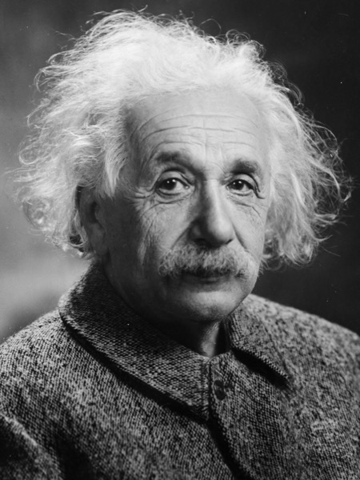

Special Relativity
Part I: From Firecrackers to the Lorentz Transformation
What if everything you know about space and time is an approximation?
For three hundred years, Newton's physics worked. It predicted eclipses, launched cannonballs, explained the tides. Space was a fixed stage. Time was a universal clock. Objects moved through space as time ticked forward, and everyone agreed on the distances and durations involved.
Then, in the late 1800s, a crack appeared. James Clerk Maxwell's equations predicted that light travels at a fixed speed, but fixed relative to what? Most physicists assumed there was an invisible medium called the "ether" filling all of space, and that light's speed was measured relative to it. In 1887, Michelson and Morley built a precision instrument to detect the Earth's motion through this ether. They found nothing. The ether, if it existed, was undetectable.
In 1905, a 26-year-old patent clerk published a paper "On the Electrodynamics of Moving Bodies". Instead of trying to save the ether, Einstein proposed two postulates: the laws of physics look the same in every inertial frame, and the speed of light is the same for all observers.
He approached this not as a paradox to be explained away, but as a fact to be followed wherever it leads. And where it leads is strange.

Prerequisites
If you know the Pythagorean theorem you already have the most important tool. Beyond that, you'll need basic algebra.
An event is something that happens at a specific place at a specific time: a firecracker going off, a photon hitting a mirror, a clock ticking. It's a point in space and a moment in time, bundled together.
A reference frame is the perspective of an observer, their set of rulers and synchronized clocks that they use to assign positions and times to events. Alice has her frame, clock, and ruler; Bob has his.
And most important: The speed of light is the same for ALL observers!
1. Two Firecrackers
Imagine a long, straight road. Alice stands at the exact midpoint between two firecrackers, one to her left and one to her right, each the same distance d away. Both firecrackers go off. Since Alice is exactly in the middle and light travels at the same speed in both directions, the flashes reach her at the same instant:
Simple enough. Now add Bob. He's on a train, gliding past Alice from left to right at a steady speed, just as the firecrackers go off. This is Alice's view of the situation. She watches Bob move toward the right flash and away from the left:
Alice's explanation is common sense: both firecrackers fired at the same time, but Bob was moving toward the right one, so its flash had less distance to cover to reach him. The right flash arrived first because of Bob's motion, not because of any timing difference.
But now look at things from Bob's perspective. In his frame, he is stationary. He's not moving toward anything. The two firecrackers are equidistant from him. Light from both travels toward him at the same speed c, not c + v from the right and c - v from the left, just c from both sides.
So Bob reasons: I'm at rest. Both firecrackers are the same distance away. Light from both approaches at the same speed. The right flash arrived first. Equal speeds and equal distances but different arrival times can only mean one thing: they were emitted at different times. The right one fired earlier.
Both explanations predict the same observable fact: the right flash reaches Bob first. But they disagree on why. Alice says they were fired simultaneously, but because Bob moved he saw the right light first. Bob says they were fired at different times because he is at rest.
Neither is wrong. And the reason both can be right is the second postulate: the speed of light is the same for all observers. Without that, everyone would just use Alice's common-sense explanation and agree the firecrackers were simultaneous. The constant speed of light is what forces the two accounts to diverge.
Simultaneity is not a fact about the universe. It depends on who is asking and how they are moving. Two events that are simultaneous for one observer need not be simultaneous for another.
2. The Light Clock
The simultaneity result is strange, but we extracted it from pure logic and one stubborn fact about light (c is constant). If simultaneity is relative, then the duration between events must also be frame-dependent.
Imagine the simplest clock you can: two parallel mirrors, facing each other, with a single photon bouncing between them. Every time the photon hits the bottom mirror, the clock goes "tick." This is a light clock, and it's useful because its mechanism is nothing but light, and we know exactly how light behaves.
Bob is sitting right next to this clock, watching the photon bounce straight up and straight down. In his frame, the path is simple: a vertical line. If the distance between the mirrors is d, then each tick takes time Δτ = 2d/c. We'll call this the proper time, the time measured by a clock that is at rest relative to the observer.
Now Alice watches the same clock from outside, and in her frame the clock is moving to the right at speed v. The photon still bounces between the mirrors, but now each mirror has moved sideways by the time the photon arrives. The photon's path isn't vertical anymore. It's diagonal. And a diagonal path is longer than a vertical path.
But the photon still travels at speed c, the same speed of light, nonnegotiable. A longer path at the same speed means more time. So Alice's measurement of the tick, Δt, is longer than Bob's Δτ. The moving clock runs slow.
How much slower? Look at Alice's triangle. The vertical leg is d. The horizontal leg is v·Δt/2 (half the distance the clock moves during one tick). The hypotenuse, the photon's actual path, is c·Δt/2. Pythagoras says:
(c·Δt/2)² = d² + (v·Δt/2)²
Given the Pythagorean theorem, we can say that c·Δt/2 > d. so it should take longer time for a tick. This is the first indication of a time dilation!
3. The Spacetime Diagram
We now have two results that are hard to hold in our heads at the same time: simultaneity depends on your motion, and moving clocks run slow. We need a visual tool, a way to see both of these results, and the relationship between them at a glance.
That tool is the spacetime diagram. Draw a horizontal axis for space and a vertical axis for time. Every point on this plane represents an event. An object that sits still traces a vertical line as time marches upward: it doesn't move in space, only in time. We call this line its worldline.
An object moving at constant speed traces a tilted line, tilted to the right if it's moving right, tilted more steeply if it's moving faster. And light? We choose our units so that the speed of light is 1 (for instance, one light-second per second). That means light always travels at exactly 45 degrees on our diagram.
An entire history (where something was, where it went, how fast it moved) is encoded in the shape of its worldline. A worldline more than 45 degrees would mean moving faster than light, which (as we'll see) is forbidden. The 45-degree light ray is the cosmic speed limit.
4. Simultaneity on the Diagram
Let's take the firecracker result from Section 1 and put it on our new diagram. In Alice's frame, the two firecrackers go off at the same time but at different places. On the diagram, "same time" means "same height": both events lie on a horizontal line. We call this Alice's line of simultaneity, or her "now" line.
What about Bob? He's moving to the right, so his worldline tilts on the diagram. And his "now" line tilts too.
Use the slider to set Bob's velocity:
The worldline tilts because Bob is moving. The "now" line tilts because Bob's notion of simultaneity is different from Alice's. These are two separate physical facts, and they produce two separate tilts on the diagram.
Look at where the two events sit relative to Bob's tilted "now" line. The right firecracker falls below the line. Below means it's in Bob's past: it has already gone off by the time Bob defines "now." The left firecracker falls above the line. Above means it's in Bob's future: it hasn't gone off yet.
The tilted "now" line is the geometric encoding of this physical reasoning. Events in Bob's direction of motion get pushed into his past. Events opposite his motion get pushed into his future. The tilt literally shows you how Bob's motion redistributes events between his past and future, relative to Alice's classification.
Now watch the physical scene play out at that velocity. Scrub the time slider to see light propagate from both firecrackers and watch which flash reaches Bob first:
6. Length Contraction
We've been talking about time. What about space? If a moving clock ticks slower, does a moving ruler also change?
Here is a spaceship. It has a front and a back, and as time passes, both the front and the back trace their own worldlines through spacetime. The region between these two worldlines is the ship's worldtube. Think of it as a sausage lying across the diagram, extending through time.
How long is the ship? That depends on how you slice the sausage. Measuring the length of a moving ship means marking where the front and back are at the same time. But "at the same time" means something different to different observers, as we just established.
There's one worldtube in spacetime. Alice slices it horizontally (her "now") and measures the contracted length. Bob slices along his tilted "now" and recovers the full rest length. Same tube, different slices, different answers.
This is length contraction. A moving object is shorter (2.08 vs 2.4) in the direction of motion, not because it's compressed, but because "length" requires a simultaneity judgment, and different frames disagree on simultaneity. The formula is L = L₀/γ = 2.4/1.155 = 2.08. The faster you go, the shorter you appear.
Length contraction isn't a physical squishing. Bob's purple line looks longer on screen because it extends through time as well as space. The extra visual length is time leaking in, not extra spatial distance. As we will see in the next section, the math shows the real measurements.
7. The Math
Time for some math. We've looked at these trippy thought experiments but nothing becomes certain until we rigorously formalize our intuitions. We can use the light clock as our initial scenario.
The setup. We name our quantities:
d = distance between mirrors (same for both observers)
v = Bob's velocity relative to Alice
c = speed of light (same for both observers ← the key)
Bob's photon path = d (straight up)
Alice's photon path = L (diagonal, longer than d)
Both measure speed = c
Step 1: Pythagoras
The half-trip forms a right triangle. Vertical leg = d. Horizontal leg = how far Bob drifts during half a tick = vΔt/2. Hypotenuse = the photon's diagonal path = L/2.
(L/2)² = d² + (vΔt/2)²
But what is L? Alice measures the photon at speed c for time Δt, so L = c × Δt. Substitute L/2 = cΔt/2:
(cΔt/2)² = d² + (vΔt/2)²
Everything is now in terms of things we know (d, v, c) and the one thing we want (Δt).
This should already breed interest since we know L/2 > d. Therefore Alice's tick time will be longer than Bob's. Time dilation...
Step 2: Algebra
Expand the squares:
c²Δt²/4 = d² + v²Δt²/4
Move the v² term to the left:
c²Δt²/4 − v²Δt²/4 = d²
Factor out Δt²/4:
Δt²/4 × (c² − v²) = d²
Solve for Δt²:
Δt² = 4d² / (c² − v²)
Take the square root:
Δt = 2d / √(c² − v²)
This is the round trip time from bottom mirror to bottom mirror in Alice's frame. Remember she is stationary while the light clock is moving with Bob.
Step 3: Extract γ
Alice's tick: ΔtAlice = 2d / √(c² − v²)
Bob's tick (straight bounce): ΔtBob = 2d / c
Divide Alice's by Bob's:
ΔtAlice / ΔtBob = (2d / √(c² − v²)) × (c / 2d) = c / √(c² − v²)
Factor c² out of the square root:
= c / (c × √(1 − v²/c²)) = 1 / √(1 − v²/c²)
We define this as:
γ = 1 / √(1 − v²/c²)
So: ΔtAlice = γ × ΔtBob. That's time dilation!
Step 4: The spacetime interval
Time dilation says:
ΔtAlice² = γ² × ΔtBob²
In Bob's frame, the two ticks happen at the same place, so ΔxBob = 0. In Alice's frame, Bob moved: ΔxAlice = v × ΔtAlice.
Substitute γ² = 1/(1 − v²/c²) and rearrange:
ΔtAlice² (1 − v²/c²) = ΔtBob²
ΔtAlice² − v²ΔtAlice²/c² = ΔtBob²
But vΔtAlice = ΔxAlice, so v²ΔtAlice² = ΔxAlice²:
ΔtAlice² − ΔxAlice²/c² = ΔtBob²
But ΔtBob² = ΔtBob² − ΔxBob²/c² (since ΔxBob = 0). Both sides have the same form! Multiply through by c²:
s² = Δx² − c²Δt² (same in both frames)
This is the spacetime interval. And it fell out of time dilation and our light clock scenario. This is the most significant math equation showing the invariance of space and time across different frames.
Alice and Bob disagree on almost everything: time, distance, simultaneity. Measurement is frame-relative. The only thing they DO agree on is the speed of light and, subsequently, the spacetime interval.
Step 5: Length contraction from the interval
The interval is invariant: Δx² − c²Δt² is the same in all frames. To measure a ship's length, you note both ends at the same time.
In Alice's frame (she measures while the ship flies past):
ΔtAlice = 0 (simultaneous measurement),
ΔxAlice = L (the length she measures)
In Bob's frame (ship is at rest for him):
ΔxBob = L_0 (rest length),
ΔtBob = ? (Alice's "same time" is NOT Bob's "same time")
The interval must be equal in both frames:
L² − c²(0)² = L0² − c²ΔtBob²
L² = L0² − c²ΔtBob²
The −c²ΔtBob² term subtracts from L0². Since ΔtBob ≠ 0 (Alice's simultaneous events aren't simultaneous for Bob), L < L0. Working out ΔtBob:
L = L0 / γ = L0 √(1 − v²/c²)
Step 6: The Lorentz transformation
We need a transformation from Alice's (x, t) to Bob's (x', t') that: (1) is linear (straight worldlines stay straight), (2) preserves the spacetime interval, and (3) reduces to Galilean (x' = x − vt) when v ≪ c.
The most general linear transformation is:
x' = Ax + Bt t' = Dx + Et
Constraint: Bob sits at x' = 0, and x = vt in Alice's frame. So 0 = A(vt) + Bt, which gives B = −Av.
Constraint: preserve the interval. Substitute and match coefficients. The algebra forces:
A = γ, B = −γv, D = −γv/c², E = γ
x' = γ(x − vt)
t' = γ(t − vx/c²)
The first equation: γ scales everything. (x − vt) is the Galilean part, subtract how far Bob has moved. If γ = 1 (v ≪ c), this is just Newton.
The second equation is the revolutionary one. The vx/c² term mixes position into time. Two events at different x positions get different time adjustments. That is the simultaneity shift. That is why the "now" axis tilts. Newton has no such term. In Galilean physics, t' = t regardless of x.
At v ≪ c: γ → 1, vx/c² → 0. Recovers: x' = x − vt, t' = t. Newton is the low-speed approximation. Einstein is the full picture.
What's Next
We now have the complete machinery: time dilation, length contraction, the spacetime interval, and the Lorentz transformation. All of it from two postulates and the Pythagorean theorem. But we've only built the framework. We haven't yet explored what it means.
In Part II, the 45-degree light lines on our diagrams become light cones, and they carve spacetime into regions: your future, your past, and everything else that is forever out of reach. Causality stops being an assumption and becomes a geometric fact. You can see why nothing travels faster than light, not as a speed limit imposed from outside, but as a consequence of the structure of spacetime itself.
Then comes energy. The same framework that bent time and shrank rulers also hides energy inside mass. E = mc² falls out of relativistic momentum the way γ fell out of Pythagoras: not as a guess, but as the only answer consistent with the postulates.
The paradoxes, truths, everything follows from a simple curiosity.